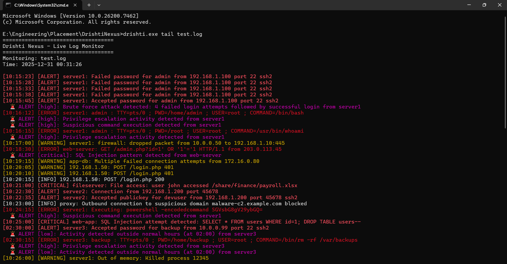
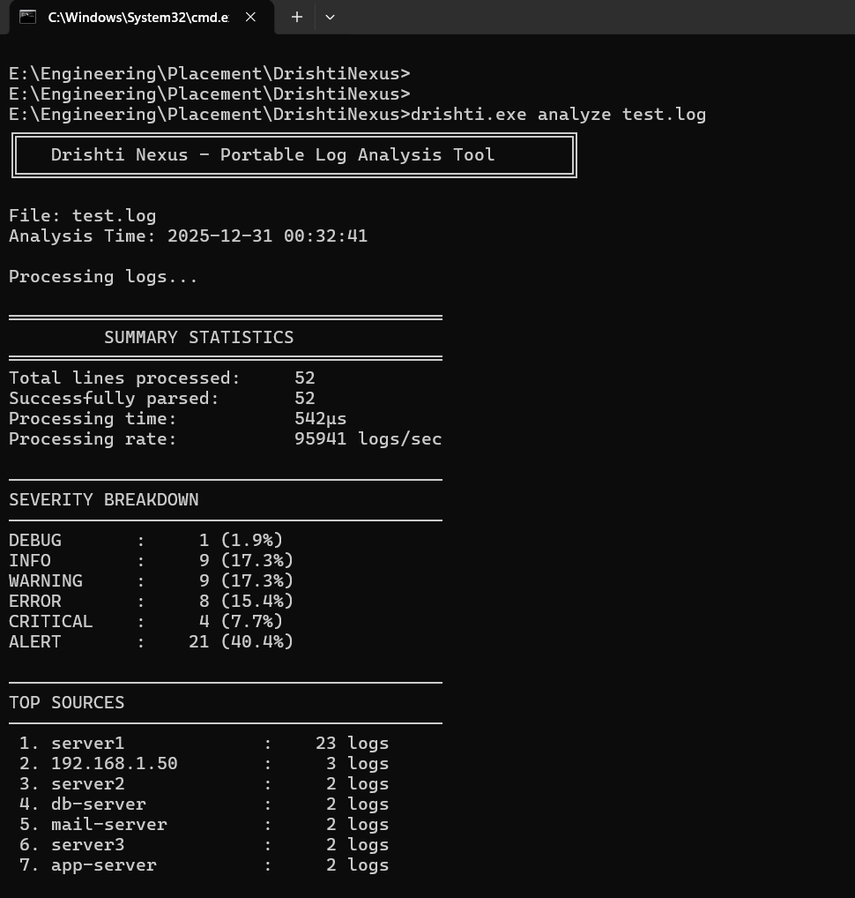
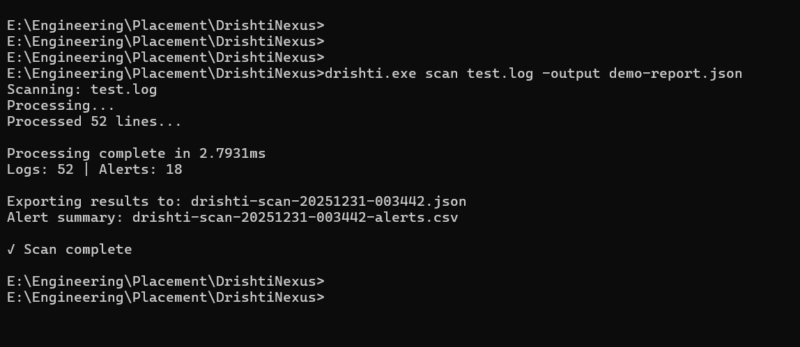
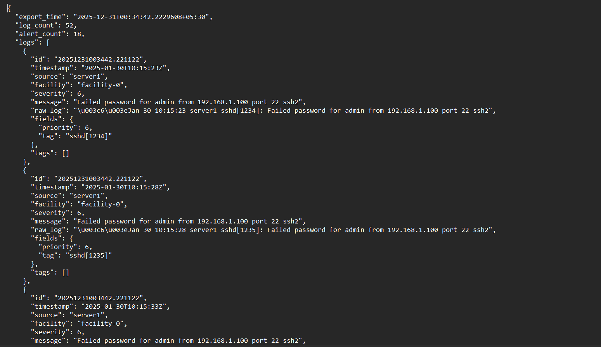
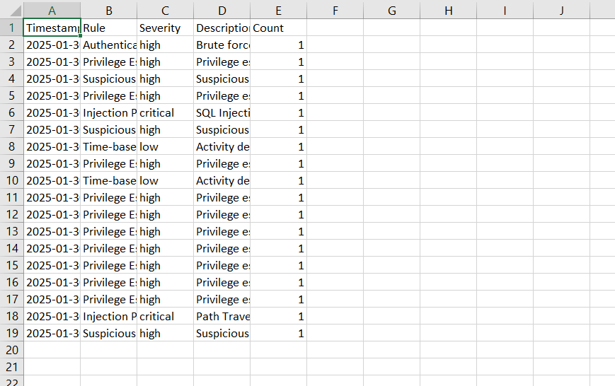
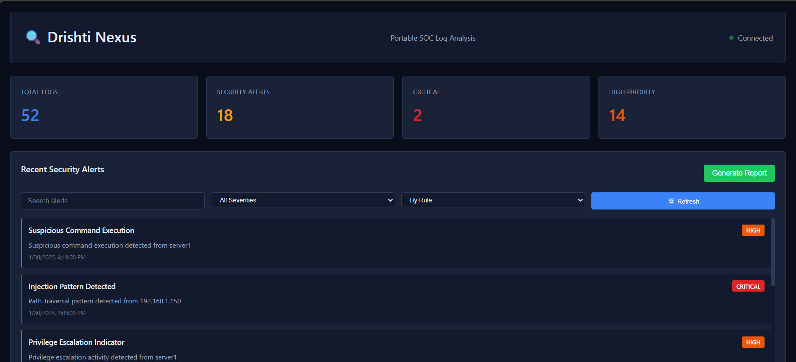

Many critical infrastructure systems, military networks, and high-security environments operate in complete isolation from the internet, commonly known as air-gapped networks. While air-gapping enhances security, it also makes log analysis and security monitoring significantly more difficult.
Most enterprise SIEM solutions rely on centralized infrastructure, frequent updates, and complex deployment models, which are impractical in isolated environments. As a result, security teams often lack a simple, portable, and offline-capable tool for log analysis and incident response.
Drishti Nexus is designed to address this gap.
Drishti Nexus is a single-binary, offline-first security log analysis tool developed in Go (Golang). It runs without installation, external services, or internet connectivity, making it suitable for deployment in air-gapped and restricted environments.
The tool is packaged as a lightweight executable that can be deployed via removable media (such as USB drives) and executed instantly on isolated systems, providing SOC-style visibility without cloud dependency.
Drishti Nexus follows a lightweight and modular architecture focused on portability and performance.
Log Parser EngineAutomatically detects and normalizes multiple log formats, including Syslog, JSON, Apache/Nginx, and generic logs.
In-Memory StorageStores parsed logs with time-based and source-based indexing. Implements LRU eviction to manage memory usage efficiently.
Detection EngineApplies deterministic, rule-based security detections designed for explainability and offline reliability.
User Interfaces
┌─────────────────────────────────────────────┐
│ Log Sources │
│ (Syslog, JSON, Apache, Generic) │
└──────────────────┬──────────────────────────┘
│
┌──────────────────▼──────────────────────────┐
│ Parser Engine │
│ • Auto-detection │
│ • Format normalization │
└──────────────────┬──────────────────────────┘
│
┌──────────────────▼──────────────────────────┐
│ In-Memory Storage & Indexing │
│ • Time-based buckets │
│ • Source indexing │
│ • LRU eviction (100k default) │
└──────────────────┬──────────────────────────┘
│
┌──────────────────▼──────────────────────────┐
│ Detection Engine │
│ • 6 rule-based detectors │
│ • Pattern matching │
│ • Stateful tracking │
└──────────────────┬──────────────────────────┘
│
┌────────┴────────┐
│ │
┌─────────▼────────┐ ┌──────▼─────────┐
│ CLI Output │ │ Web Dashboard │
│ │ │ (WebSocket) │
└──────────────────┘ └─────────────────┘
Drishti Nexus implements six high-impact security detection rules:
All detection logic is deterministic and explainable, avoiding machine-learning dependencies that require internet access or training data.
Detection thresholds and rules are configurable and can be updated offline via removable media.
Drishti Nexus provides four core operational modes:
These modes support both incident response and post-incident investigation workflows.

Figure 1: Live log monitoring with color-coded output

Figure 2: Historical log analysis with statistics

Figure 3: Batch scanning and report generation

Figure 4: JSON report export

Figure 5: CSV report export

_Figure 5: Web Dashboard _
These limitations are intentional to preserve simplicity, portability, and offline reliability.
Drishti Nexus is well suited for:
By enabling portable and offline security analysis, the tool improves situational awareness in environments where traditional SIEM solutions cannot operate.
Drishti Nexus demonstrates that effective security log analysis can be achieved without cloud services or heavy infrastructure. By prioritizing offline operation, portability, and explainable detection, it provides a practical solution for security teams working in isolated environments.
The project combines systems engineering principles with real-world cybersecurity needs, making it both a functional tool and a strong technical showcase.